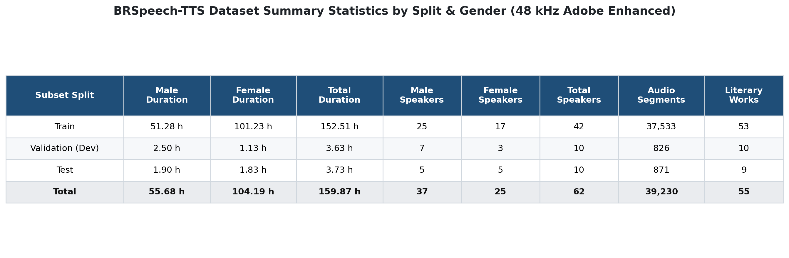
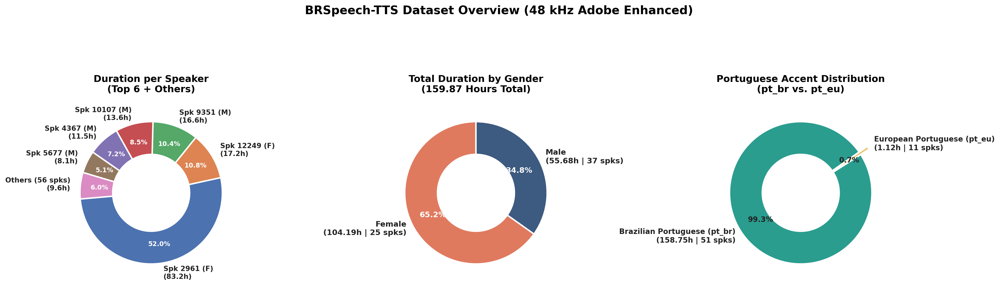
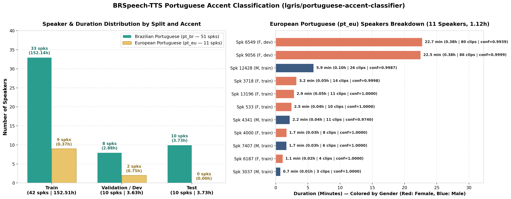
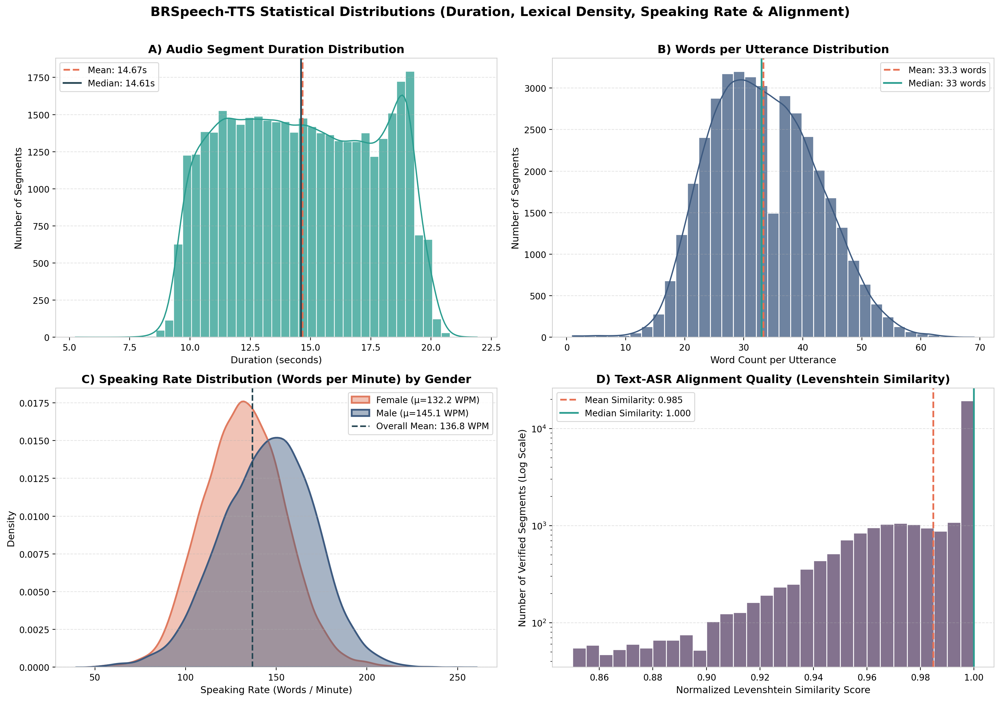
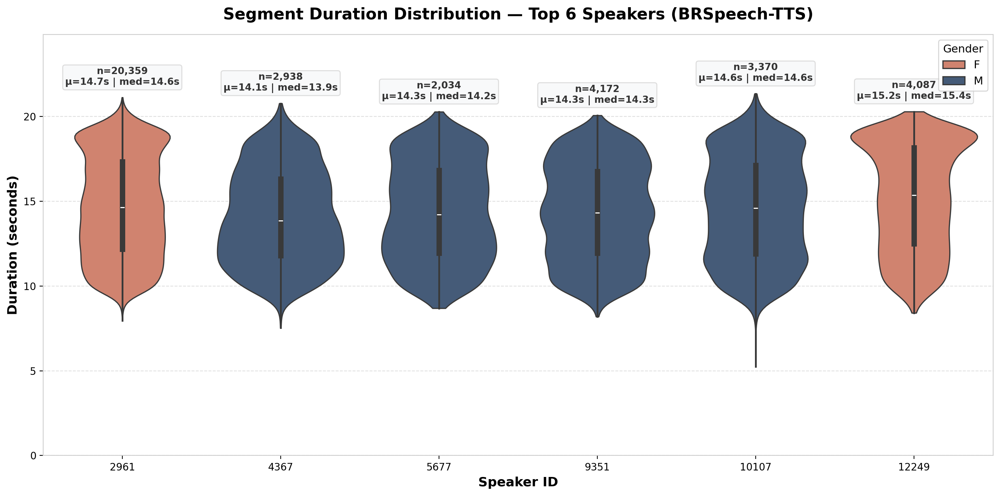
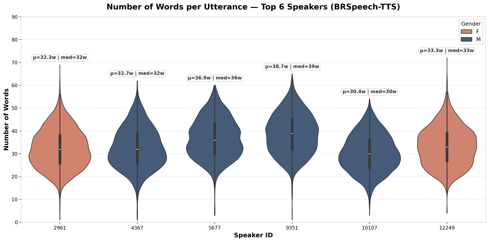
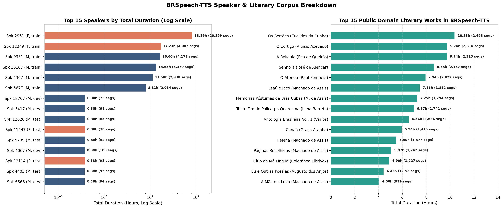

About BRSpeech-TTS
BRSpeech-TTS is a high-quality, multi-speaker speech synthesis (Text-to-Speech) corpus in Portuguese, developed at the Center of Excellence in Artificial Intelligence (CEIA) of the Federal University of Goiás (UFG). It is an enhanced version of the Portuguese subset of the CML-TTS Dataset that underwent professional studio-level audio restoration and speech enhancement using Adobe Podcast Enhance (Adobe Speech Enhancement).
- Adobe Speech Enhancement: All recordings from the CML-TTS Portuguese subset were processed through Adobe Enhancement to remove background noise, room reverberation, and microphone artifacts while preserving speaker timbre and prosody.
- Full-Bandwidth 48 kHz Audio: Upsampled and restored to 48 kHz (16-bit PCM Mono FLAC/WAV), compared to 24 kHz in the original CML-TTS release.
- ASR-Verified Transcriptions: Segments were transcribed using OpenAI Whisper Large-v2 and MMS, aligned against public-domain literary texts from Project Gutenberg and LibriVox, achieving a mean Levenshtein similarity score of 0.983 (median 1.000).
- Verified Per-Speaker Accent Labels (
pt_brvs.pt_eu): Every clip across all 62 speakers was evaluated with thelgris/portuguese-accent-classifiermodel, identifying 51 Brazilian Portuguese (pt_br) speakers (158.75 h / 99.30%) and 11 European Portuguese (pt_eu) speakers (1.12 h / 0.70%).
Download & Hugging Face Hub
The BRSpeech-TTS dataset is officially hosted on the Hugging Face Hub at
https://huggingface.co/datasets/freds0/BRSpeech-TTS/
under the CC-BY 4.0 license. You can load it directly in Python using the Hugging Face datasets library:
from datasets import load_dataset
# Load the BRSpeech-TTS dataset from Hugging Face Hub
dataset = load_dataset("freds0/BRSpeech-TTS")
print(dataset)
# DatasetDict({
# train: Dataset({features: ['wav_filename', 'duration', 'text', 'transcript', 'levenshtein', 'speaker', 'file_size', 'num_words', 'gender', 'accent', 'audio'], num_rows: 73848})
# validation: Dataset({features: [...], num_rows: 1158})
# test: Dataset({features: [...], num_rows: 1316})
# })You can also download the original CML-TTS Portuguese archives, segment metadata, and speaker accent classifications:
- BRSpeech-TTS on Hugging Face Hub (Adobe Enhanced version — Parquet format with integrated audio, transcripts, Levenshtein scores, speaker gender & verified
pt_br/pt_euaccent metadata) - Per-Speaker Accent Classification CSV (
accent_por_locutor.csv) — Speaker-level predictions, clip counts, majority share, and confidence scores for all 62 narrators - CML-TTS Dataset Portuguese (v0.1) — MD5:
8c877a4be0eb41f275497609df5a114c - CML-TTS Dataset Segments (v0.1) — MD5:
f529a908aba26a6d891b4fb17ab3125b - BRSpeech-CML-TTS Release Archive (
BRSpeech_CML_TTS_v14012024.tar.bz) — MD5:0966023cea9c0f339dae464d0fcfe7f8
Dataset Statistics & Analysis
BRSpeech-TTS comprises recordings of 55 public-domain literary works from Project Gutenberg read by 62 volunteer narrators from the LibriVox project: 51 Brazilian Portuguese (pt_br) speakers accounting for 158.75 hours (99.30%) of total duration, and 11 European Portuguese (pt_eu) speakers accounting for 1.12 hours (0.70%).
Across the 39,230 base FLAC recordings (20.59 GB compressed FLAC; further segmented into 76,322 utterances in the Hugging Face Hub release), the corpus totals 159.87 hours of speech and 1,306,913 words (7.61 million characters).
1. Split, Gender & Accent Breakdown
The table below details the distribution of audio duration, speakers by gender and accent (pt_br vs. pt_eu), base segments, Hugging Face sub-segments, and literary works across the train, validation (dev), and test splits:
| Subset Split | Male Duration | Female Duration | Total Duration | Male Speakers | Female Speakers | Total Speakers | Accents (pt_br / pt_eu) | Base FLAC Segments | HF Hub Utterances | Books |
|---|---|---|---|---|---|---|---|---|---|---|
| Train | 51.28 h | 101.23 h | 152.51 h | 25 | 17 | 42 | 33 pt_br / 9 pt_eu |
37,533 | 73,848 | 53 |
| Validation (Dev) | 2.50 h | 1.13 h | 3.63 h | 7 | 3 | 10 | 8 pt_br / 2 pt_eu |
826 | 1,158 | 10 |
| Test | 1.90 h | 1.83 h | 3.73 h | 5 | 5 | 10 | 10 pt_br / 0 pt_eu |
871 | 1,316 | 9 |
| Total | 55.68 h (34.8%) | 104.19 h (65.2%) | 159.87 h (100%) | 37 (59.7%) | 25 (40.3%) | 62 (100%) | 51 pt_br / 11 pt_eu | 39,230 | 76,322 | 55 |


pt_br vs. pt_eu, right).2. Portuguese Accent Classification (pt_br vs. pt_eu)
To provide accurate dialect labels for TTS training and accent-conditioned synthesis, all 39,230 base FLAC files across the 62 speakers were classified using lgris/portuguese-accent-classifier (checkpoint 4f287aba669b7688570a213bdab125631a0a0920) using sliding 5.0 s windows (2.5 s hop) at 16 kHz.
Each speaker's accent label (pt_br or pt_eu) is determined by majority vote across all of their utterances (with 0 classification errors across all 39,230 clips). The full per-speaker table is available in accent_por_locutor.csv and integrated into the accent column of the Hugging Face Hub dataset.
| Accent Label | Portuguese Variety | Speakers (M / F) | Splits (Train / Dev / Test) | Duration (Hours) | Duration Share | Speaker Segments | Clip Preds (pt_br / pt_eu) | Mean Majority Share | Mean Confidence |
|---|---|---|---|---|---|---|---|---|---|
| pt_br | Brazilian Portuguese | 51 (33 M / 18 F) | 33 / 8 / 10 spks (152.14h / 2.88h / 3.73h) |
158.75 h | 99.30% | 38,971 | 38,926 / 45 | 99.64% | 0.9808 |
| pt_eu | European Portuguese | 11 (4 M / 7 F) | 9 / 2 / 0 spks (0.37h / 0.75h / 0.00h) |
1.12 h | 0.70% | 259 | 0 / 259 | 100.00% | 0.9969 |
| Total | All Varieties | 62 (37 M / 25 F) | 42 / 10 / 10 spks | 159.87 h | 100.00% | 39,230 | 38,926 / 304 | 99.71% | 0.9837 |

pt_br vs. pt_eu). Right — Breakdown of all 11 European Portuguese (pt_eu) speakers by duration, clip count, and classifier confidence.
All 11 European Portuguese (pt_eu) speakers achieved 100.0% clip-level agreement (all 259 clips classified as pt_eu, 0 as pt_br), while 43 of the 51 Brazilian Portuguese (pt_br) speakers also achieved 100.0% agreement (and the remaining 8 pt_br speakers achieved 92.39%–99.94% majority share).
▸ View Complete Per-Speaker Accent Classification Table (All 62 Speakers — accent_por_locutor.csv)
| Speaker ID | Gender | Split | Accent | Duration | Total Samples | pt_br Samples | pt_eu Samples | Majority Share | Mean Confidence |
|---|---|---|---|---|---|---|---|---|---|
| 533 | F | train | pt_eu | 0.04 h | 10 | 0 | 10 | 100.00% | 0.999962 |
| 2959 | M | train | pt_br | 0.11 h | 28 | 28 | 0 | 100.00% | 0.989884 |
| 2961 | F | train | pt_br | 83.19 h | 20,359 | 20,346 | 13 | 99.94% | 0.997096 |
| 3037 | M | train | pt_eu | 0.01 h | 3 | 0 | 3 | 100.00% | 0.999963 |
| 3050 | F | test | pt_br | 0.31 h | 74 | 73 | 1 | 98.65% | 0.909725 |
| 3369 | M | train | pt_br | 0.01 h | 4 | 4 | 0 | 100.00% | 0.999957 |
| 3427 | M | train | pt_br | 0.00 h | 1 | 1 | 0 | 100.00% | 0.999957 |
| 3718 | F | train | pt_eu | 0.05 h | 14 | 0 | 14 | 100.00% | 0.999833 |
| 3814 | F | train | pt_br | 0.01 h | 3 | 3 | 0 | 100.00% | 0.999955 |
| 3976 | M | train | pt_br | 0.03 h | 6 | 6 | 0 | 100.00% | 0.900933 |
| 4000 | F | train | pt_eu | 0.03 h | 8 | 0 | 8 | 100.00% | 0.999963 |
| 4067 | M | dev | pt_br | 0.38 h | 100 | 100 | 0 | 100.00% | 0.999957 |
| 4341 | M | train | pt_eu | 0.04 h | 11 | 0 | 11 | 100.00% | 0.973961 |
| 4367 | M | train | pt_br | 11.50 h | 2,938 | 2,920 | 18 | 99.39% | 0.980433 |
| 4405 | M | test | pt_br | 0.38 h | 92 | 92 | 0 | 100.00% | 0.996158 |
| 4778 | F | train | pt_br | 0.02 h | 5 | 5 | 0 | 100.00% | 0.999957 |
| 4783 | M | train | pt_br | 0.03 h | 9 | 9 | 0 | 100.00% | 0.967152 |
| 4801 | M | train | pt_br | 0.01 h | 2 | 2 | 0 | 100.00% | 0.999957 |
| 5025 | F | train | pt_br | 0.01 h | 2 | 2 | 0 | 100.00% | 0.999953 |
| 5068 | F | train | pt_br | 0.02 h | 4 | 4 | 0 | 100.00% | 0.955339 |
| 5103 | F | train | pt_br | 0.07 h | 17 | 17 | 0 | 100.00% | 0.966601 |
| 5417 | M | dev | pt_br | 0.38 h | 91 | 91 | 0 | 100.00% | 0.993757 |
| 5677 | M | train | pt_br | 8.11 h | 2,034 | 2,031 | 3 | 99.85% | 0.999008 |
| 5705 | M | train | pt_br | 0.10 h | 25 | 25 | 0 | 100.00% | 0.989961 |
| 5739 | M | test | pt_br | 0.38 h | 92 | 85 | 7 | 92.39% | 0.837860 |
| 5888 | F | train | pt_br | 0.14 h | 36 | 36 | 0 | 100.00% | 0.971716 |
| 6187 | F | train | pt_eu | 0.02 h | 4 | 0 | 4 | 100.00% | 0.999957 |
| 6207 | M | train | pt_br | 0.11 h | 27 | 27 | 0 | 100.00% | 0.962295 |
| 6549 | F | dev | pt_eu | 0.38 h | 80 | 0 | 80 | 100.00% | 0.993945 |
| 6566 | M | dev | pt_br | 0.38 h | 94 | 94 | 0 | 100.00% | 0.992791 |
| 6581 | M | train | pt_br | 0.01 h | 3 | 3 | 0 | 100.00% | 0.905089 |
| 6601 | M | train | pt_br | 0.06 h | 17 | 16 | 1 | 94.12% | 0.991015 |
| 6700 | M | train | pt_br | 0.03 h | 9 | 9 | 0 | 100.00% | 0.963342 |
| 7028 | M | train | pt_br | 0.17 h | 43 | 43 | 0 | 100.00% | 0.957247 |
| 7407 | M | train | pt_eu | 0.03 h | 6 | 0 | 6 | 100.00% | 0.999961 |
| 7925 | F | test | pt_br | 0.38 h | 92 | 92 | 0 | 100.00% | 0.999955 |
| 8655 | M | dev | pt_br | 0.28 h | 58 | 58 | 0 | 100.00% | 0.990805 |
| 8680 | F | train | pt_br | 0.08 h | 20 | 20 | 0 | 100.00% | 0.979348 |
| 9056 | F | dev | pt_eu | 0.38 h | 86 | 0 | 86 | 100.00% | 0.999884 |
| 9217 | M | train | pt_br | 0.19 h | 50 | 50 | 0 | 100.00% | 0.999957 |
| 9351 | M | train | pt_br | 16.60 h | 4,172 | 4,172 | 0 | 100.00% | 0.999311 |
| 9485 | M | train | pt_br | 0.11 h | 28 | 28 | 0 | 100.00% | 0.999957 |
| 9958 | F | train | pt_br | 0.07 h | 20 | 20 | 0 | 100.00% | 0.989957 |
| 10107 | M | train | pt_br | 13.63 h | 3,370 | 3,370 | 0 | 100.00% | 0.998553 |
| 10199 | F | train | pt_br | 0.08 h | 22 | 22 | 0 | 100.00% | 0.992958 |
| 10250 | F | train | pt_br | 0.12 h | 29 | 29 | 0 | 100.00% | 0.999957 |
| 10296 | M | train | pt_br | 0.12 h | 31 | 31 | 0 | 100.00% | 0.999957 |
| 10670 | M | train | pt_br | 0.00 h | 1 | 1 | 0 | 100.00% | 0.999956 |
| 11247 | F | test | pt_br | 0.38 h | 78 | 78 | 0 | 100.00% | 0.999956 |
| 11995 | F | dev | pt_br | 0.38 h | 78 | 78 | 0 | 100.00% | 0.977448 |
| 12114 | F | test | pt_br | 0.38 h | 91 | 91 | 0 | 100.00% | 0.999957 |
| 12249 | F | train | pt_br | 17.23 h | 4,087 | 4,087 | 0 | 100.00% | 0.999502 |
| 12287 | M | test | pt_br | 0.38 h | 91 | 90 | 1 | 98.90% | 0.983076 |
| 12428 | M | train | pt_eu | 0.10 h | 26 | 0 | 26 | 100.00% | 0.998674 |
| 12626 | M | test | pt_br | 0.38 h | 85 | 85 | 0 | 100.00% | 0.966972 |
| 12670 | F | test | pt_br | 0.38 h | 89 | 89 | 0 | 100.00% | 0.997902 |
| 12707 | M | dev | pt_br | 0.38 h | 73 | 72 | 1 | 98.63% | 0.961310 |
| 12710 | M | dev | pt_br | 0.38 h | 92 | 92 | 0 | 100.00% | 0.987517 |
| 12865 | M | train | pt_br | 0.15 h | 38 | 38 | 0 | 100.00% | 0.986876 |
| 13063 | M | test | pt_br | 0.38 h | 87 | 87 | 0 | 100.00% | 0.982489 |
| 13069 | M | dev | pt_br | 0.31 h | 74 | 74 | 0 | 100.00% | 0.999955 |
| 13196 | F | train | pt_eu | 0.05 h | 11 | 0 | 11 | 100.00% | 0.999962 |
3. Acoustic, Lexical & Alignment Metrics
The table below summarizes the statistical distributions of segment duration, word count, character length, speaking rate, and ASR text-audio alignment similarity across the BRSpeech-CML-TTS corpus:
| Metric | Mean ± Std | Median | IQR (25% – 75%) | Min – Max |
|---|---|---|---|---|
| Base Segment Duration (s) | 14.67 ± 2.98 s | 14.61 s | 12.13 – 17.27 s | 5.26 – 21.91 s |
| HF Sub-Segment Duration (s) | 8.80 ± 4.46 s | 9.10 s | 4.64 – 12.80 s | 0.12 – 20.00 s |
| Words per Base Segment | 33.31 ± 8.99 words | 33.0 words | 27.0 – 40.0 words | 1 – 72 words |
| Characters per Base Segment | 193.89 ± 49.07 chars | 192.0 chars | 162.0 – 228.0 chars | 4 – 410 chars |
| Speaking Rate (Words / Min) | 136.69 ± 24.59 WPM | 136.46 WPM | 120.2 – 152.8 WPM | 40.0 – 260.0 WPM |
| Levenshtein Alignment Similarity | 0.9829 ± 0.021 | 1.0000 | 0.972 – 1.000 | 88.94% ≥ 0.95 (60.5% exact 1.0) |

4. Top Speakers Analysis
The 6 most prolific narrators in the training set (2961, 12249, 9351, 10107, 4367, and 5677) account for 150.29 hours (94.0%) of the dataset, making BRSpeech-TTS suitable for both single-speaker high-resource TTS (e.g., Speaker 2961 with 83.20 hours) and multi-speaker / zero-shot voice cloning across all 62 speakers.
| Speaker ID | Gender | Accent | Split | Duration (Hours) | Dataset Share | Segments | Total Words | Books Read | Mean Duration |
|---|---|---|---|---|---|---|---|---|---|
| 2961 | Female (F) | pt_br | Train | 83.20 h | 52.04% | 20,359 | 656,825 | 38 | 14.71 s |
| 12249 | Female (F) | pt_br | Train | 17.23 h | 10.78% | 4,087 | 136,244 | 6 | 15.18 s |
| 9351 | Male (M) | pt_br | Train | 16.61 h | 10.39% | 4,172 | 161,517 | 5 | 14.33 s |
| 10107 | Male (M) | pt_br | Train | 13.64 h | 8.53% | 3,370 | 102,431 | 4 | 14.57 s |
| 4367 | Male (M) | pt_br | Train | 11.51 h | 7.20% | 2,938 | 95,931 | 16 | 14.11 s |
| 5677 | Male (M) | pt_br | Train | 8.11 h | 5.07% | 2,034 | 75,092 | 4 | 14.35 s |
| Other 56 Speakers | 33 M / 23 F | 45 pt_br / 11 pt_eu | Train / Dev / Test | 9.57 h | 5.99% | 2,270 | 78,873 | 31 | 15.18 s |



Portuguese Audio Samples
Audio Samples from the Portuguese Subset & YourTTS Synthesis
| Speaker | Accent & Gender | Ground Truth | YourTTS |
|---|---|---|---|
| 4067 | pt_br Male (Dev) |
||
| 6549 | pt_eu Female (Dev) |
||
| 11247 | pt_br Female (Test) |
||
| 12710 | pt_br Male (Dev) |
||
Citation
If you use BRSpeech-TTS or CML-TTS in your research, please cite our paper:
@InProceedings{Cmltts2023,
title="CML-TTS: A Multilingual Dataset for Speech Synthesis in Low-Resource Languages",
author="Oliveira, Frederico S. and Casanova, Edresson and Junior, Arnaldo Candido and Soares, Anderson S. and Galv{\~a}o Filho, Arlindo R.",
editor="Ek{\v{s}}tein, Kamil and P{\'a}rtl, Franti{\v{s}}ek and Konop{\'i}k, Miloslav",
booktitle="Text, Speech, and Dialogue",
year="2023",
publisher="Springer Nature Switzerland",
address="Cham",
pages="188--199",
isbn="978-3-031-40498-6"
}